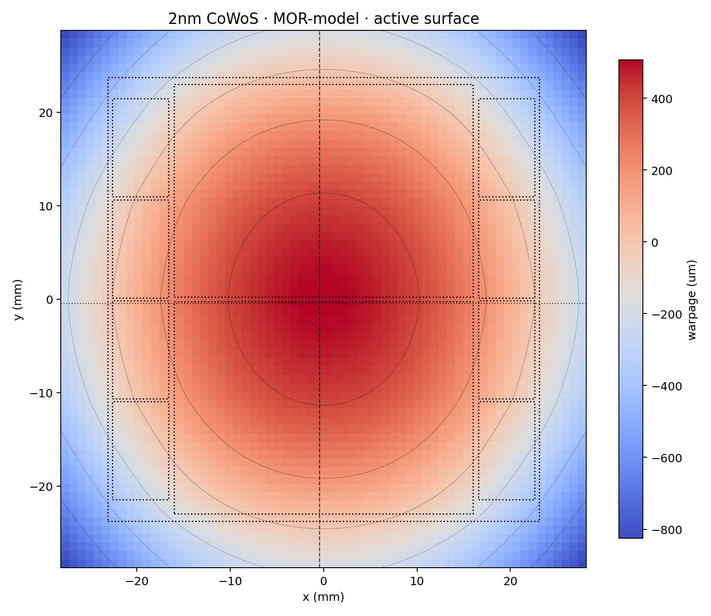

01 / Coupled physics
Physics is coupled
IR-drop drives heat, heat drives electromigration, CTE mismatch drives warpage. Checked one domain at a time, each answer misleads.
An agentic flow for chip integrity and reliability. Thermal, warpage, electromigration and power-integrity engines fast enough to run on every design candidate — each one checked against its own physics reference.


Actual engine output: a ThermStack temperature field on a 7 nm stepped HBM+CPU package and a WarpStack warpage map of a 2nm CoWoS package.
Full 3D thermal and warpage fields in milliseconds with AI, seconds with the numerical engine.
Sweep thousands of floorplans, stack-ups and materials in the time one 3D solve used to take.
Every fast answer is verified against a numerical ground-truth engine in the same tool.
In a chiplet package, electrical, thermal and mechanical physics no longer separate — and the tools accurate enough to trust are too slow to keep in the design loop. Why physics became a first-order constraint →
IR-drop drives heat, heat drives electromigration, CTE mismatch drives warpage. Checked one domain at a time, each answer misleads.
A full 3D solve costs minutes. A design-space search needs thousands of them, so physics gets checked last.
An autonomous design agent can only optimize what it can invoke. GUI-bound analysis can't close the loop.
A human sets the objectives, the budget and the stopping condition once. After that the loop runs unattended — proposing candidates in parallel, evaluating each against real physics, and verifying with a separate agent before anything is signed off.
Every analysis is scriptable. Nothing in the loop needs a GUI.
Machine-readable inputs; fields, margins and hotspots out.
Plugs into any agentic orchestration layer you already run.
Optimize against real physics, not a surrogate proxy.
Each engine pairs a physics-exact numerical solver with a fast path for exploration, on the same inputs and output format. Every analysis is a CLI call an agent can make thousands of times.
Static and transient 3D temperature fields for 2.5D/3D chiplet stacks, read directly from IEEE 3Dblox.
Warpage maps and peak-to-peak bow for 2.5D/3D packages, from 3D sign-off to millisecond sweeps.
Coupled electromigration, thermomigration and IR-drop over real power grids, with lifetime prediction.
Transient power-grid simulation and dynamic IR-drop on million-node designs.
Every fast path is scored against a numerical ground-truth engine on the same geometry, so each answer comes with a known error.
This page stays short on purpose. Methods, benchmarks, figures and their scope notes live in a growing series of white papers you can read, share and cite in a design review.
0.509 K from 3D FEM at up to 182× the speed across eight IEEE 3Dblox packages, plus a graph-neural surrogate at 10.6 ms per map.
Read the paper →3D, reduced-order and graph-neural methods from one design description; within 0.036 µm of 3D at 798,000× the speed on a 2nm CoWoS package.
Read the paper →The NoveetyAI suite is in active development. Request access or a walkthrough on your own 2.5D/3D chiplet designs.